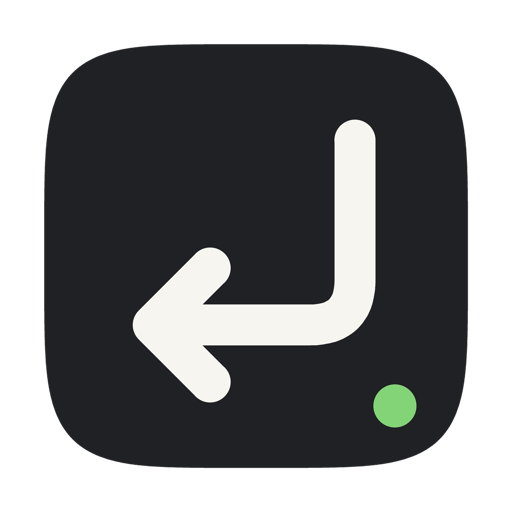

确认与停止
AI 等你拍板时，在 iPhone 或 Apple Watch 上按一下。
给正在使用 AI Agent 的开发者
从沙发、厨房，或只是离开桌面的几分钟里，确认、停止、选择，说一句话。NearCue 让 Mac 上的任务继续推进。
一条指令，只在你的设备之间流动。
附近网络通信
不读取屏幕与代码
每个应用单独允许
绝不自动提交
01 / Control
NearCue 不是远程桌面。它只把必要的动作，送到必要的位置。
AI 等你拍板时，在 iPhone 或 Apple Watch 上按一下。
方向、Tab、删除、撤销与命令前缀，保留真正有用的控制。
把识别文字插入 Mac 当前输入框。你仍然决定是否提交。
把常用指令整理成按钮，在手机管理，并同步到手表。
02 / Principles
NearCue 的边界
不读取屏幕。
不经过云端。
不替你按下最后一步。
每台 Mac 都需要配对。每个受控应用都需要明确允许。语音在设备端识别，诊断信息只由你手动导出。
阅读完整隐私政策03 / Setup
从 App Store 安装 iPhone 版，从本页下载免费的 Mac 接收端。
两台设备位于同一附近网络时，输入六位配对码，并在 Mac 上批准。
授予 Mac 辅助功能权限，再添加你要控制的前台应用。
04 / Download
Mac 接收端免费。iPhone 免费版提供基础控制，一次性内购买断可解锁全部遥控功能，无订阅。
iPhone + Apple Watch
在 App Store 免费下载。Apple Watch App 随 iPhone 版提供。

Mac Receiver
免费下载安装，使用 Developer ID 签名，并已通过 Apple 公证。
下载 NearCue.dmg macOS 15+ · 版本 1.0 (8) · SHA-25605 / Support
如果这里没有答案，请写信给我们。
xdx_lab@126.com确认两台设备处于同一 Wi-Fi 或附近点对点网络，并在 iPhone 的“设置 → 隐私与安全性 → 本地网络”中允许 NearCue。Mac 端 NearCue 需要保持运行。
NearCue 需要把你主动触发的按键发送到受控应用，因此使用辅助功能权限。Mac 版改为官网分发，但安装包仍使用 Apple Developer ID 签名并完成公证。
请检查 Mac 端是否已授予辅助功能权限、目标应用是否位于前台，以及该应用是否已经在 NearCue 中明确允许。
不会。NearCue 只把识别文字插入 Mac 当前输入框，不会自动确认或发送。最终提交始终由你决定。
在 iPhone 的 NearCue 设置或购买页面点击“恢复购买”，并使用购买时的 Apple 账户。Mac 接收端本身免费，无需再次购买。